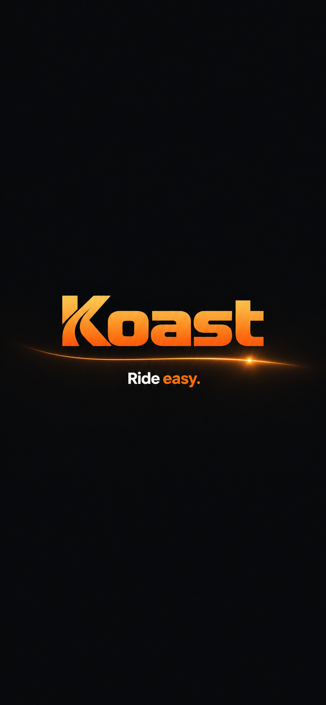
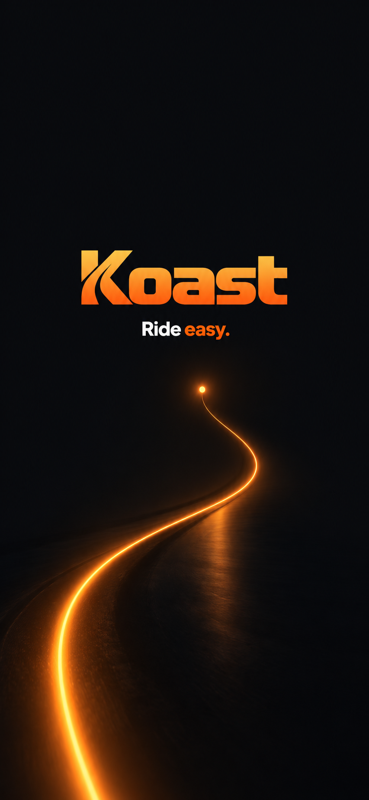

KOAST · NEW MOTION STUDY
Light from the underline.
A continuous wash of light rises from the underline into the wordmark. A finer glow, smoother motion, and the original vector logo keep the finish crisp.
0.0 / 3.0 sExploratory preview · The live app is unchanged.

Ride easy.
